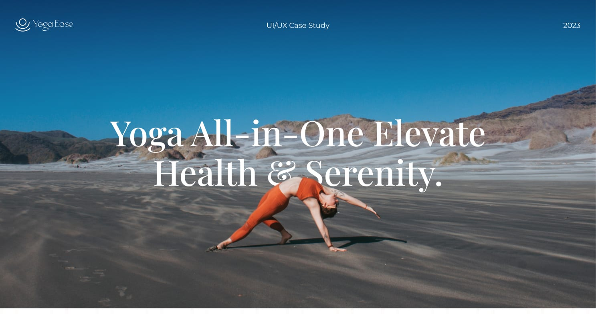
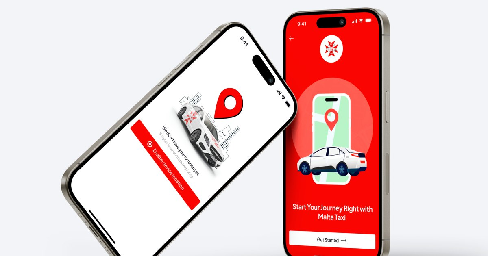

Wellness · Product design
Five wellness apps, folded into one.
YogaEase brings guided practice, mindfulness, recipes and a store into one routine behind a single account.
- User interviews
- Affinity mapping
- Personas
- Information architecture
- Mobile UI
- Design systems
- Prototyping

01 — At a glance
The project in thirty seconds.
- 1Problem
- Practice, meditation, recipes and shopping lived in five separate apps.
- 2Users
- Yoga enthusiasts, from first-timers to regular practitioners.
- 3Solution
- One app with five connected areas and a single wellness dashboard.
- 4Outcome
- 40+ screens delivered to handoff in about 80 hours.
02 — Problems → solutions
Problems, and how each was solved.
Eight user interviews surfaced the same four pain points again and again.
- Problem 01
Not enough time for long sessions around work.
SolutionShort on-demand sessions — five-minute meditations and preloaded videos — beside the live timetable.
- Problem 02
No sense of progress, and little meditation content.
SolutionA wellness dashboard tracking yoga, sleep, mood, water and steps together.
- Problem 03
Practice and nutrition lived in separate apps.
SolutionRecipes in the tab bar, right next to the practice.
- Problem 04
Beginners felt overwhelmed by complex poses and thin guidance.
SolutionA graded beginner series, a curated library, and four intro screens before sign-up.
03 — Process
How the work ran.
Client goals, idea validation and eight user interviews.
Affinity mapping, a persona, and one site map across mindfulness, yoga, home, shop and recipes.
Wireframes into 40+ final screens on a calm, consistent design system.
Prototyping, review and handoff.
Users asked for more content; what they needed was less. The design favours a curated selection and a clear beginner path over a bigger catalogue.
04 — Insights → decisions
What I learned, and what it changed.
Tap a card to see the design decision.
05 — The solution
The key screens.
Overview
Welcome, recipes and the session library.
- Five areas behind one account.
- One calm visual system across all of them.
Home dashboard
Progress you can see at a glance.
- Yoga, sleep, mood, water and steps tracked in one place.
- Short on-demand sessions next to the live timetable.
First run
Showing the value before asking for an account.
- Four intro screens show what the app offers first.
- Then social sign-in and a verification code.
Feed & workshops
A personalised home feed and upcoming workshops.
- A mood check-in personalises the feed.
- Live workshops sit beside on-demand content.
06 — Outcome
Five products, one wellness routine.
- 40+
Screens designed across the full journey.
- 80+
Hours from first interview to handoff.
- 8
Users interviewed in qualitative research.
- 5
Connected product areas under one IA.
Delivered to handoff — no post-launch analytics were collected, and none are claimed.
What I learned
What was five apps to juggle ended as one flow behind a single account.
I worked under the guidance of an experienced Team Lead to bring the app to life.
